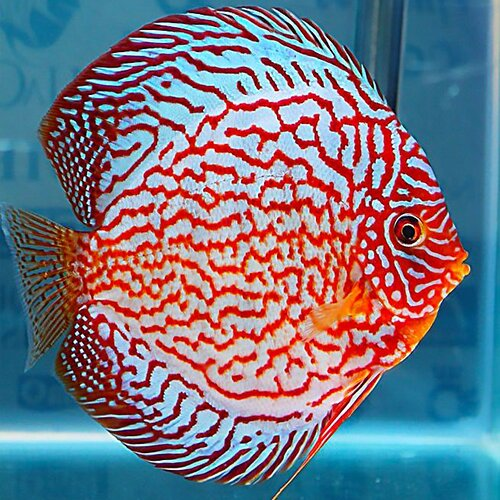

Katalog
Selamat datang di katalog kami yang memukau, penuh dengan
keindahan alami ikan hias yang memikat hati. Dari ikan guppy
dengan sirip yang menari bak lukisan berwarna-warni, hingga ikan koki yang menggemaskan dengan tubuh
bulatnya yang khas,
koleksi kami hadir untuk memanjakan mata para pecinta ikan hias.
Tak ketinggalan, ada juga ikan channa yang eksotis dengan pesona liar dan karakteristiknya yang kuat.
Katalog ini
menawarkan berbagai pilihan ikan hias lain yang siap memperindah akuarium Anda, membawa suasana tenang dan
damai ke
dalam ruangan.
Eksplorasi Keindahan Akuatik Bersama Kami Mari temukan ikan hias yang sempurna untuk koleksi Anda,
masing-masing dengan
keunikan dan keindahan tersendiri yang hanya bisa ditemukan di alam bawah air.
.jpg)
koki
Ikan koki, dengan bentuk tubuhnya yang bulat dan siripnya yang elegan,
adalah pilihan sempurna untuk memperindah
akuarium Anda. Dengan warna cerah dan gerakan anggun, ikan koki mampu memberikan sentuhan
keindahan dan ketenangan di
rumah. Dapatkan ikan koki sehat dan berkualitas, tersedia dalam berbagai warna dan ukuran, cocok
untuk pemula maupun
pecinta ikan berpengalaman. Segera miliki ikan koki pilihan Anda dan jadikan akuarium semakin
hidup

Cana
Ikan channa, dengan tampilan gagah dan corak warnanya yang eksotis,
menjadi primadona bagi para pecinta ikan predator.
Dikenal dengan sifatnya yang tangguh dan gerakan yang penuh karisma, ikan channa cocok bagi
kolektor yang mencari ikan
dengan karakter kuat. Kami menyediakan berbagai jenis ikan channa yang sehat dan berkualitas,
siap memperkaya akuarium
Anda dengan pesonanya yang unik. Jadikan ikan channa sebagai daya tarik utama di akuarium Anda
sekarang juga!

Discus
Ikan discus, sering dijuluki sebagai 'Raja Akuarium,' memukau dengan
bentuk tubuhnya yang bulat sempurna dan corak
warnanya yang menawan. Dengan warna-warna cerah dan pola unik, ikan discus adalah pilihan elegan
untuk mempercantik
akuarium. Ikan ini dikenal akan sifatnya yang damai dan pergerakannya yang anggun, menciptakan
suasana tenang dan
memikat. Kami menyediakan ikan discus berkualitas tinggi dalam beragam warna, cocok untuk pemula
hingga kolektor
profesional. Dapatkan ikan discus pilihan Anda dan tambahkan sentuhan keindahan eksotis di
akuarium Anda!

Guppy
Ikan guppy, si mungil penuh pesona dengan ekor lebar yang
berwarna-warni, adalah pilihan sempurna untuk menghidupkan
akuarium Anda. Dikenal dengan variasi warna dan pola yang tak terbatas, guppy membawa keindahan
dan keceriaan dalam
setiap gerakannya. Cocok untuk pemula dan kolektor, ikan ini mudah dirawat dan mampu berkembang
biak dengan cepat,
menjadikan akuarium semakin ramai dan penuh warna. Dapatkan ikan guppy berkualitas dari koleksi
kami dan saksikan
sendiri betapa pesonanya akan menjadikan akuarium Anda lebih hidup dan penuh warna-warni alami!

Cupang
Ikan cupang, atau sering disebut sebagai 'ikan petarung', adalah
simbol keindahan dan ketahanan. Dengan siripnya yang
megah dan warna yang memukau, cupang menawarkan pesona yang tak tertandingi dalam setiap
akuarium. Karakter agresifnya
yang unik menjadikannya ikan yang menarik untuk dipelihara, sementara keindahan fisiknya menjadi
daya tarik utama bagi
para kolektor. Kami menyediakan berbagai jenis ikan cupang berkualitas, dari yang paling klasik
hingga yang paling
eksotis. Tambahkan ikan cupang ke koleksi Anda dan nikmati keindahan serta keanggunan yang akan
menghiasi ruang Anda!

Neon
Ikan neon, dengan kilauan warna biru cerah dan merah menyala di
sepanjang tubuhnya, adalah bintang di dalam akuarium
Anda! Ikan kecil ini tidak hanya menambah keindahan visual, tetapi juga membawa suasana hidup
yang menyenangkan. Dikenal
karena sifatnya yang damai dan kemampuannya untuk berkelompok, ikan neon sangat cocok untuk
pemula maupun pecinta ikan
berpengalaman. Kami menawarkan ikan neon berkualitas tinggi yang sehat dan aktif, siap menjadi
teman yang ceria di
akuarium Anda. Tambahkan sentuhan warna yang menawan dengan ikan neon dan saksikan mereka
berenang dengan anggun di
antara tanaman dan dekorasi Anda!